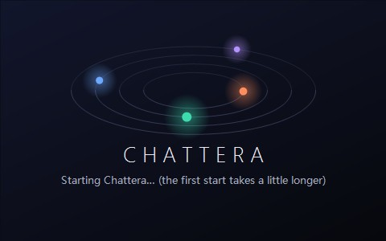
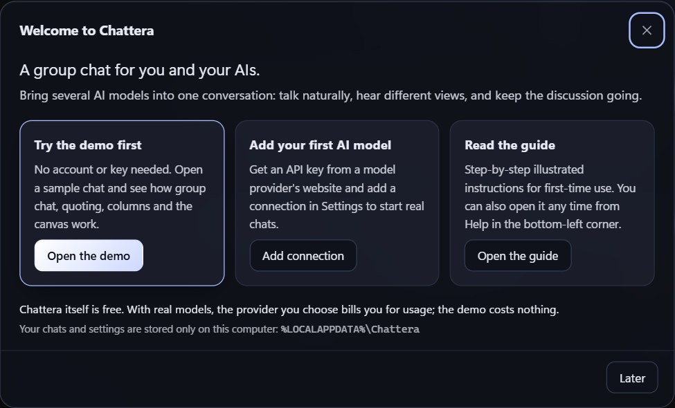
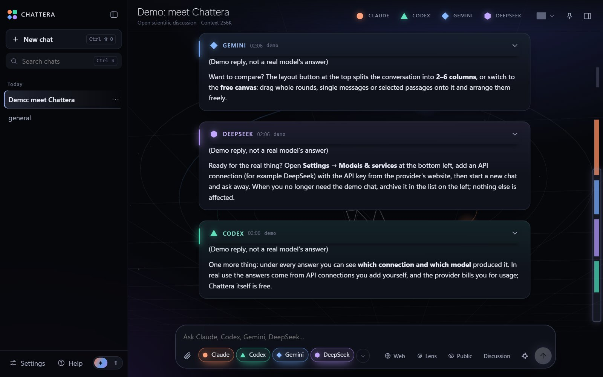
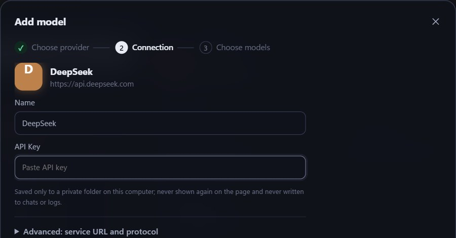

Right-click the downloaded Chattera-Windows-x64.zip → Extract All… → Extract
(don't run it from inside the ZIP). Open the extracted folder; you'll see:
Chattera.exeA small start-up window appears (the first start takes about ten seconds), then Chattera's window opens.

The first time, a welcome page appears. Start with Open the demo on the left: no account or key needed, and it's free.

Type a question in the box at the bottom and press Enter. Several AIs answer, each in turn (in the demo the answers are prewritten examples marked “Demo reply”).

An API key is the “pass” an AI provider gives you. Sign up on the provider's website, add credit, then create
and copy a key on its “API Keys” page (for example the DeepSeek platform at platform.deepseek.com). Then:

Chattera follows the Windows display language; change it any time in Settings → General →
Language. Closing the window does not quit Chattera. To quit completely, right-click the Chattera icon in the
notification area at the bottom right → Quit Chattera, or click Help → Quit Chattera
inside Chattera. Double-click Chattera.exe to open it again.
Columns, the free canvas, web retrieval, the research library, data and troubleshooting are covered in the full
guide (Chinese, 02_Chattera完整使用指南.pdf) and in Chattera's Help.